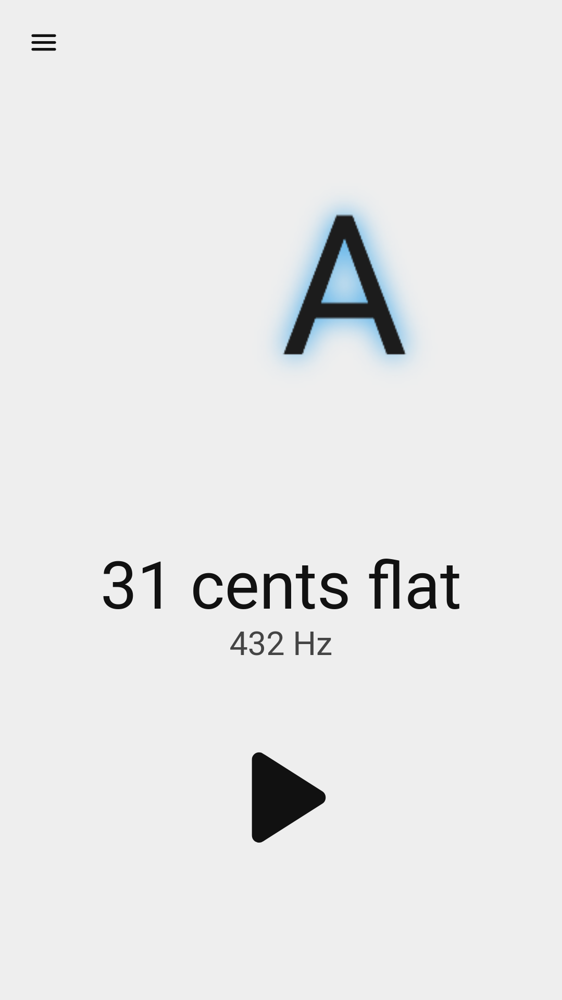
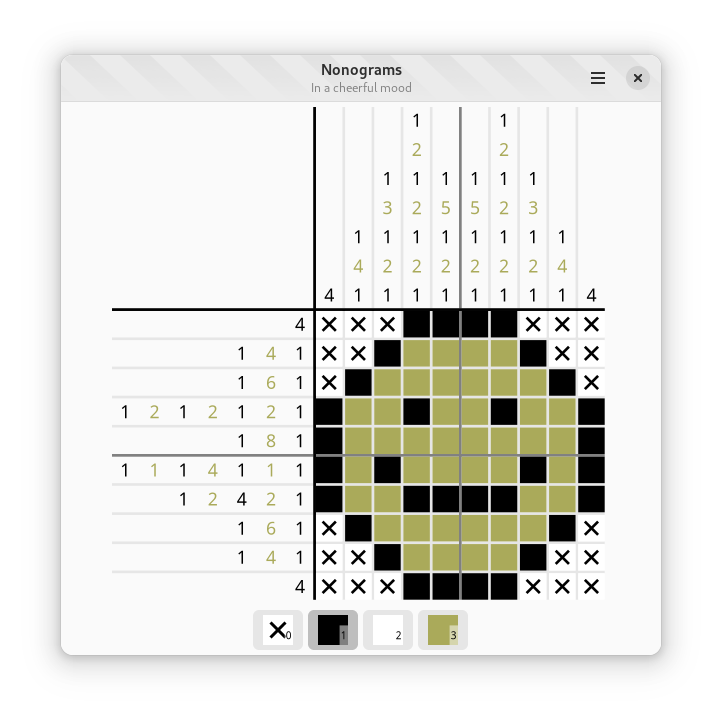
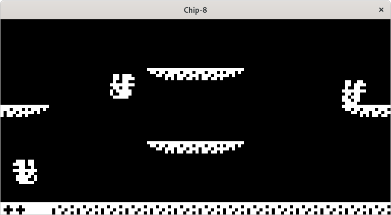

Temperatune

Temperatune is a tuner which supports different musical temperaments. It is designed to be easy to use and mobile-friendly. It is powered by Pitchy, a pitch-detection library I wrote in TypeScript using the McLeod pitch method.
Nonograms

Nonograms is a nonogram game designed for GNOME and written in Zig using zig-gobject (another of my projects). It currently serves a dual role as a fun game project and as a testing ground of a "real project" for zig-gobject.
GJisho

GJisho is a Japanese-English dictionary designed for GNOME. It includes features such as vocabulary example sentences and kanji lookup by parts.
Chip-8

Chip-8 is an emulator for the CHIP-8 video game system. It also comes with an assembler and disassembler for use with CHIP-8 programs as well as detailed documentation about the platform.